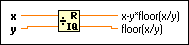

Quotient & Remainder Function
Owning Palette: Numeric VIs and Functions
Requires: Base Development System
Computes the integer quotient and the remainder of the inputs. This function rounds floor(x/y) to the nearest integer towards -inf.
The connector pane displays the default data types for this polymorphic function.

 Add to the block diagram Add to the block diagram |
 Find on the palette Find on the palette |